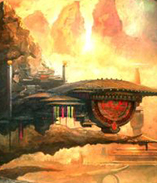
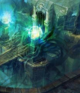
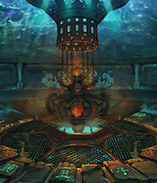
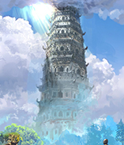
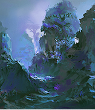
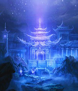
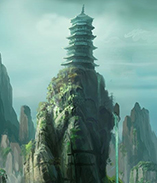

简介
PROFILES
独立隐世，偏处一偶，隐世八宗之一的伦音海阁，这里是世俗人心目中的圣地，无数武道人一生中追求的目标。
创始人为海伦音——法丹境巅峰，半步引雷境的强者。她是与其他七宗联手，一起覆灭寂静宗的八名高人之一。事后，她在寂静宗的废墟之下，正式建立了后来名震大陆伦音海阁。
现任宗主为舒雪蒲，法丹境中期巅峰强者。
镇宗功法为万世潮音功。
GEOGRAPHICALLYS
地理环境
伦音海阁位于真龙大陆东海海底。伦音海潮——天下十景排名第三。每年的八月十五，海浪席卷过来，都会发出弹琴一样的声响，溅起的浪花，飞上数万米的高空，击打礁石，在阳光下，呈现出七彩虹一样的颜色。
组织结构
STRUCTURE
伦音海阁由七峰组成，按照实力和规模，分为上三峰：天剑峰、真丹峰、玄道峰；下四峰：伦音峰、圣琴峰、百花峰、及幻灭峰。
STRUCTURE
人员结构
五十岁之上，如果还没有突破气穴境中期，那么，就代表潜力已尽，必须脱离出来，远离弟子身份，成为执事，长老。而五十岁以下，则还是顶峰弟子范畴，除非你突破法丹，否则，可以一直保留此身份。宗门供养你，助你修炼，提供你各种修炼丹药，法宝资源，尽全力助你突破。这个时期，往往不掌握实权，不参与繁杂的宗门事务，只要一心修炼，这群人，是宗门重点培养的对象。 因为他们代表著宗门的未来。
管理层
MANAGEMENT
总阁主： 法丹境。
七脉峰主：半步法丹境；
内门普通长老、实权长老，太上长老：气穴中期，后期，巅峰，大圆满。
DISCIPLE
弟子
入门弟子：纳气五至十层。
精英弟子：九层至混元初期。
内门弟子：混元中期，后期。
重要地点
IMPORTANT PLACE
伦音海阁就是一个浓缩的小型社会，各种店铺鳞次梯比，但凡涉及衣、食、住、行，灵草，灵兽，灵丹，武器，秘笈，珍宝，应有尽有。
-

宗务殿
伦音海阁任务发放处，完成总务殿交给的任务，可以根据难度得到相应的奖励，如：道钱、装备、秘笈、丹药等。
每月初一，任务榜会更新一次，所有任务，一共分灰，绿，黄，蓝，紫，赤，黑七色。每级，又分九星，九星最高，一星最低。如：红色四星任务的完成难度高于紫色三星任务。
-
执事楼
所有新入阁的弟子需要去执事楼领取身份令牌和道服，伦音海阁七峰，各有各的独门服饰，如天剑峰，一袭紫衣，袖纹银剑，真丹峰，黄衣道袍，肩绣丹炉，道服就是七峰各自的标志。
身份令牌，则是在宗务殿接取任务，存储积分等必须的器物，是进入宗门任何重要地点的绝对钥匙，决不可少。
 -

古丹室
坐落于七峰之后伦音海阁的宗门坊市，一处偏僻的海底峡谷中。伦音海阁弟子购买所需丹药之处。
-
试练塔
伦音海阁内宗弟子修炼处，塔高一百零八层，每一层都有相应凶兽幻象需要击杀，层数越高，凶兽的等级越高。另外，每天只有50位进塔修炼名额。
 -

寂静废墟
伦音海阁禁地，混元境以上弟子修炼之处，根据击杀阴灵的数量进行排名，有“寂静伏尸榜”。
-
水月潮音洞
伦音海阁至高禁地，只允许对宗门做出过特别贡献的弟子进入，修行伦音海阁镇宗功法——万世潮音功。
每月初一，任务榜会更新一次，所有任务，一共分灰，绿，黄，蓝，紫，赤，黑七色。每级，又分九星，九星最高，一星最低。如：红色四星任务的完成难度高于紫色三星任务。
-

广寒殿
位于幻灭峰上，是男主厉寒修行之处。
-
宗务殿
坐落于七峰之后伦音海阁的宗门坊市，一处偏僻的海底峡谷中。伦音海阁弟子购买所需武器、装备之处。

-

玄武阁
位于伦音海阁一处断崖后的八层楼暗灰古塔，里面存放着大量功法秘籍，这里有气穴境强者日夜守护。伦音海阁弟子需缴纳相应的宗门贡献点在此处借阅秘籍进行修习。
入门弟子，只能查阅人品上阶以下功法。内门弟子，能查阅人品顶阶以下功法。顶峰弟子，能查阅半地品以下功法。
地品以上，没有获取途径。整个伦音海阁，只有一部地品功法，只有阁主，副掌座，以及阁主亲自指定的下一任伦音海阁继承人，等寥寥数人，拥有修炼资格。
重要人物
IMPORTANT PEOPLE
作为原著中重要门派，伦音海阁云集了众多高手，是修道界真正的中流砥柱。
| 姓名 | 性别 | 年龄 | 境界 | 职位 | 所属山峰 |
|---|---|---|---|---|---|
| 殇璃易 | 男 | 30 | 法丹境 | 长老 | 天剑峰 |
| 殇璃易 | 男 | 30 | 法丹境 | 长老 | 天剑峰 |
| 殇璃易 | 男 | 30 | 法丹境 | 长老 | 天剑峰 |
| 殇璃易 | 男 | 法丹境 | 长老 | 天剑峰 | |
| 殇璃易 | 男 | 法丹境中期巅峰 | 长老 | 天剑峰 |
赛事
MATCH
外宗小比
MINOR TOURNAMENT
伦音海阁外宗弟子小比，两年举行一次，只要修为在纳气七层以上，年纪在二十五岁以下，皆可参加。胜利者，前十能直接进入内门，获得进入宗武阁挑选一门人品上阶功法的机会。最为出类拔萃的几人，还有机会得到宗门长老看中，收为弟子，一步登天。
| 姓名 | 性别 | 年龄 | 境界 | 职位 | 所属山峰 |
|---|---|---|---|---|---|
| 殇璃易 | 男 | 30 | 法丹境 | 长老 | 天剑峰 |
| 殇璃易 | 男 | 30 | 法丹境 | 长老 | 天剑峰 |
| 殇璃易 | 男 | 30 | 法丹境 | 长老 | 天剑峰 |
| 殇璃易 | 男 | 法丹境 | 长老 | 天剑峰 | |
| 殇璃易 | 男 | 法丹境中期巅峰 | 长老 | 天剑峰 |
内宗大比（七脉剑比）
INOR TOURNAMENT
七脉剑比，每隔三年才会举行一次的宗门大试练。每名弟子，若在其中获得不俗的名次，不仅能收获个人荣誉、不菲奖励，更能提升所在主峰的地位，是伦音海阁弟子必争的荣誉。参加七脉剑比，要求年纪不得超过三十五岁，修为在混元境以上。七脉剑比，一般是内门，顶峰弟子的比试。
| 姓名 | 性别 | 年龄 | 境界 | 职位 | 所属山峰 |
|---|---|---|---|---|---|
| 殇璃易 | 男 | 30 | 法丹境 | 长老 | 天剑峰 |
| 殇璃易 | 男 | 30 | 法丹境 | 长老 | 天剑峰 |
| 殇璃易 | 男 | 30 | 法丹境 | 长老 | 天剑峰 |
| 殇璃易 | 男 | 法丹境 | 长老 | 天剑峰 | |
| 殇璃易 | 男 | 法丹境中期巅峰 | 长老 | 天剑峰 |
荣誉
HONOR
寂静浮尸榜位于寂静废墟，通过击杀其中的阴灵获取成绩。有人就根据千百年来，伦音海阁中的弟子，在里面获得的成绩总数，各方表现，排成了——寂静浮尸榜。
寂静浮尸榜
zombie rank
| 姓名 | 性别 | 年龄 | 境界 | 职位 | 所属山峰 |
|---|---|---|---|---|---|
| 殇璃易 | 男 | 30 | 法丹境 | 长老 | 天剑峰 |
| 殇璃易 | 男 | 30 | 法丹境 | 长老 | 天剑峰 |
| 殇璃易 | 男 | 30 | 法丹境 | 长老 | 天剑峰 |
| 殇璃易 | 男 | 法丹境 | 长老 | 天剑峰 | |
| 殇璃易 | 男 | 法丹境中期巅峰 | 长老 | 天剑峰 |
外宗弟子榜
low rank
| 姓名 | 性别 | 年龄 | 境界 | 职位 | 所属山峰 |
|---|---|---|---|---|---|
| 殇璃易 | 男 | 30 | 法丹境 | 长老 | 天剑峰 |
| 殇璃易 | 男 | 30 | 法丹境 | 长老 | 天剑峰 |
| 殇璃易 | 男 | 30 | 法丹境 | 长老 | 天剑峰 |
| 殇璃易 | 男 | 法丹境 | 长老 | 天剑峰 | |
| 殇璃易 | 男 | 法丹境中期巅峰 | 长老 | 天剑峰 |
内宗弟子榜
intermediate rank
| 姓名 | 性别 | 年龄 | 境界 | 职位 | 所属山峰 |
|---|---|---|---|---|---|
| 殇璃易 | 男 | 30 | 法丹境 | 长老 | 天剑峰 |
| 殇璃易 | 男 | 30 | 法丹境 | 长老 | 天剑峰 |
| 殇璃易 | 男 | 30 | 法丹境 | 长老 | 天剑峰 |
| 殇璃易 | 男 | 法丹境 | 长老 | 天剑峰 | |
| 殇璃易 | 男 | 法丹境中期巅峰 | 长老 | 天剑峰 |
顶峰弟子榜
senior rank
| 姓名 | 性别 | 年龄 | 境界 | 职位 | 所属山峰 |
|---|---|---|---|---|---|
| 殇璃易 | 男 | 30 | 法丹境 | 长老 | 天剑峰 |
| 殇璃易 | 男 | 30 | 法丹境 | 长老 | 天剑峰 |
| 殇璃易 | 男 | 30 | 法丹境 | 长老 | 天剑峰 |
| 殇璃易 | 男 | 法丹境 | 长老 | 天剑峰 | |
| 殇璃易 | 男 | 法丹境中期巅峰 | 长老 | 天剑峰 |